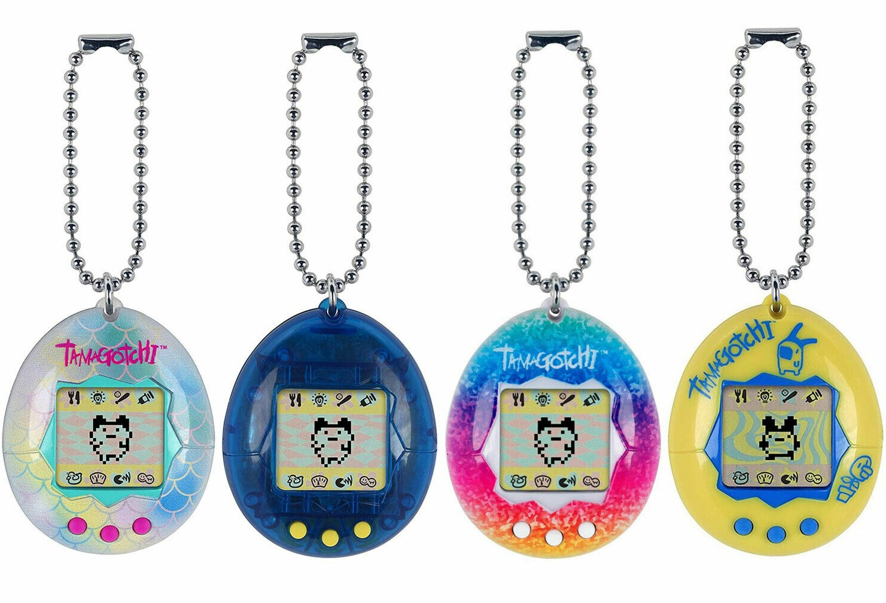
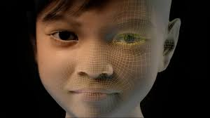
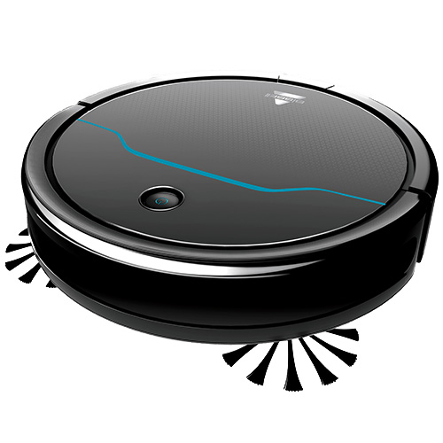
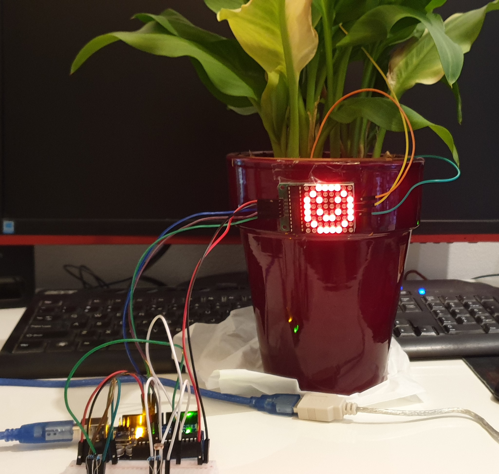

Artificial: "Made or produced by human beings rather than occurring naturally, especially as a copy of something natural." So, artificial creatures are human made devices and often resemble an actual living creature. What artificial creatures are people using already? How can artificial creatures help humans make their lives easier? These and other questions will hopefully be answered in this challenge!
Research
たまごっち
Also known as Tamagotchi, is a very early version of an artificial creature that dates back all the way to 1996. The Tamagotchi was released outside of Japan in 1997 by Bandai, the manufacturer. The Tamagotchi is a portable virtual pet simulation. It has several different stages of growth and will develop based on the care the user provides. The Tamagotchi requires care, otherwise it can get sick, unhappy and even die. The caretaking of the Tamagotchi directly ties into the real world caretaking of animals. It teaches the user to take care of and spend time with the Tamagotchi to keep it happy and healthy. A valuable lesson for young children, all from a handheld lcd screen.

Sweetie
One particular application of an artificial creature that always stuck with me is Sweetie. Sweetie is an artificial creature developed for Terre des Hommes, a charitable organization that does everything in their power to stop child exploitation. They state the following on their website: “Terre des Hommes unmasked over 1,000 offenders of webcam sex with children in just two months. Thanks to the 10-year-old virtual Filipino girl, named Sweetie, Terre des Hommes has put webcam child sex tourism on the worldwide map.” (source).
Sweetie is one of the best examples to show that artificial creatures are not only a fun technological development, but can also be used for a noble cause like Terre des Hommes’s.

E-cleaning
The most generally known example of an artificial creature is a robot vacuum cleaner. Statista estimates "...there were 14.2 million households with robotic vacuum cleaners in the United States in 2018, an increase of 1.2 million from the year before." (source). Most people even give their robot vacuum a name!
This form of artificial creatures is increasing in popularity, probably because it makes household chores easier. I think that is where the power of artificial creatures lie: making daily life easier for everyone. To elaborate on that, we might have artificial creatures doing our laundry, ironing, cooking, brushing teeth and grocery shopping in the future!
Tinkering
I got inspired by the research I did, and wondered what I could do for tinkering. There is such a wide variety of options for artificial creatures. I figured it’d be quite difficult to make actual working artificial creatures, since I’m at home and therefore quite limited in use of tools. Accordingly, for this challenge I decided to work more towards proof-of-concept.
Archie, the Artificial Creature
Some people love pets; others not so much. Although pet lovers do not always have the option of actually owning a pet. This can have numerous reasons, such as being away from home a lot, allergies, small living space, etc. Wouldn’t it be fantastic for those people to have a robopet instead? It could do everything a real pet can, but you wouldn’t have to feed it, you can’t be allergic to it, you can actually turn it off if you want to; awesome, right?
For the first demo, I wanted to take the term ‘creature’ quite literal. I wanted to create some sort of animal-esque artificial creature. I dug up my old K’NEX box from way back in the day, and started creating some kind of creature. I called it ‘Archie, the Artificial Creature’. To give Archie some basic abilities, I hooked it up to my Arduino, using a 360° servo. I wrote code that would make Archie move forward. To make sure Archie wouldn’t drive itself into a wall, I added an Ultrasonic Proximity Sensor. If Archie would be closer than 15 cm to anything, the servo would stop, turn back a bit, and then continue.
I then added a piezo speaker to play a tone if Archie was closer than 15 cm to anything.
Archie can be expanded upon even further, using different inputs and outputs. For example, Archie could be equipped with high-tech facial recognition eyes, so that it would know who its owner is and can recognize emotion in a face.
Also, if Archie’s owner would be up for using some kind of wearable, Archie could measure things like heart rate, body temperature, perspiration and breathing, and use the data to connect with the owner on an emotional level.
If equipped with a microphone/voice recognition software, Archie could even perform simple tasks such as fetching certain things.
I ran into some problems getting Archie to actually work. I think there was a problem in my code somewhere, but I can’t seem to find out exactly what the problem is. However, I hope the code and above description gives a good indication on what I tried to achieve. I’ll need to be far more advanced in Arduino before I could make all of the above work out, as well as requiring more tools and sensors.
I run at least once a week, because I find it important to keep in shape. I used to run together with a friend sometimes. I like to run with someone else because it lifts me up during a run, as well as motivate me to catch up and overtake the other person; it adds some spirit of competition.
However, lately I’ve been running alone a lot due to the current circumstances.
This is where RunningBuddy comes in. RunningBuddy is literally a buddy that can go on a run with you! RunningBuddy would work a lot like a drone, so it would be flying along with the user, with its movements, location and behavior all based on the user.
Now, as I covered in the Wearables topic, I own a smartwatch with heart rate sensor and GPS. RunningBuddy would be able to connect to such smartwatches to receive GPS data and determine its position based on it. The user can choose how RunningBuddy positions itself, but the default would be that RunningBuddy will maintain a constant speed based on the speed of the user, while positioning itself about 10 meters ahead. That way, the user is able to catch up with and even overtake RunningBuddy. If overtaken, RunningBuddy would overtake the user to stay in the lead. This is the default setting to motivate the user to go faster.
To let RunningBuddy know where to go, the user must upload a route. This can also be recordings of previous routes. In that case, RunningBuddy would function much like a ‘ghost car’ in a racing game. It would look at the previously uploaded route, determine its position and direction based on that, and encourages the user to improve upon the uploaded previous run.
RunningBuddy would be equipped with:
GPS, for determining position and following uploaded routes.
Camera, to give RunningBuddy vision. It would need to see if there are any obstacles in the way, as well as track the user.
Ultrasonic proximity sensors, to make sure RunningBuddy dodges obstacles.
Altitude meter, for determining RunningBuddy’s altitude.
Face tracking, to link RunningBuddy to the user.
Bluetooth connectivity, to send and receive information from and to RunningBuddy.
RunningBuddy would be able to link to smartwatches and phones, to pause, stop and land it at any time.
For the demo, I made several sketches and designs of what the product might look like, and how it would be used.
Om Nom
The next demo is a mix of AR and Artificial Creatures. Much like the Tamagotchi discussed in the research part of this challenge, this also concerns an artificial animal one can care for. However, unlike the Tamagotchi, which uses an lcd screen, the creature in this demo, called Om Nom, is interacted with through an AR app.
To give the user a feeling of caring for an actual physical being, the app could use object tracking to project Om Nom in place of some kind of object, for example an life-sized plushie. Much like an actual pet, Om Nom can perform numerous tasks, such as eat, sleep, play, do tricks, etc. The app would purely be for entertainment purposes. I made the AR app using Spark AR Studio, in which Om Nom is generated. I added numerous menu-options to give an indication of what the interface could look like. Check out this short clip for the creation of the app and a screenshot of the interface.
Design and build
For the design and build phase of Artificial Creatures, I came up with a concept of a plant with artificial intelligence. I named the concept ‘Phil the Plant’.

I started by connecting the 8x8 LED matrix to use as output, and the NTC (Negative Temperature Coefficient) sensor to measure the ambient temperature around the plant. I determined the threshold value of the sensor by measuring the default value and heated up value using my fingers. I set up the matrix so that it would display a sad face, decreasing temperature on a thermometer, and the text “+°C” in a cycle, if the measured temperature would be a certain amount below the threshold. Next, I did the same thing, so that it would display the sad face, thermometer and “-°C” for when the measured temperature would be a bit above the threshold.
I continued by connecting an LDR (Light Dependent Resistor) sensor to measure the amount of incoming light. It will display a sad face, sun, and either a – or + depending on the LDR sensor input and thus the amount of light.
Phil the Plant can be extended upon by adding a humidity sensor, to display whether the plant needs watering by measuring the humidity of the soil.
You can check the creation process video and corresponding Arduino code below! Check the showcase section for the final prototype.
Are you the person that always lets their plants die? Can’t even keep a cactus alive? Then Phil the Plant is for you!
Phil the Plant has multiple sensors that will make taking care of your plants so much easier. It can tell you if it’s too hot or cold through the integrated temperature sensor. Also, it will tell you if it needs some shadow or sun, thanks to the light sensor. Finally, Phil the Plant can tell you if it’s thirsty or overwatered. This will all display on the LED screen, which shows a happy face if Phil the Plant is all good.
Check out the showcase video of the prototype for Phil the Plant below!
Reflect
Artificial Creatures: the topic and its future
The research part of this challenge helped me discover the broader variety of applications in which artificial creatures can be used, but also what machines or devices can be seen as artificial creatures instead. I think artificial creatures do have promising real world applications. Especially for people that could get somewhat lonely, it would be ideal to have a creature to keep them company. Besides that, artificial creatures could someday take on the role of service animals. They wouldn’t have to be trained, but can provide the same amount of assistance and service. That would make them far more available for those in need. However, we must not forget that artificial creatures and intelligence will always require human intelligence to develop.
My final product
I had a lot of fun thinking up, designing and developing Phil the Plant. For one because I am that person that always lets their plants die, but also because I think the concept is very interesting. I like the possibilities of making artificial creatures out of ordinary, every day objects and devices, in a way that makes our lives easier. Phil the Plant could even be expanded further upon by connecting it to an automated watering device, triggered by the humidity sensor. That way, one could leave their home for a while without having to worry about watering plants.
As far as the setup and coding of Phil the Plant went, I was able to get almost everything to work as it was supposed to. The only thing missing from the setup was the actual humidity sensor, which I do not possess.
Experience with artificial creatures
I haven’t had too much experience with artificial creatures and affective computing, especially on the affective computing and robotics side. I do however have experience with numerous applications of artificial creatures, such as the Tamagotchi back in the day. Another way which is effectively also an experience with artificial creatures, is the Nintendogs game I used to play in my teens. I’m more of the real creatures than artificial ones, though. I got to know the subject but I don’t think I’d pick an artificial creature over a real one.